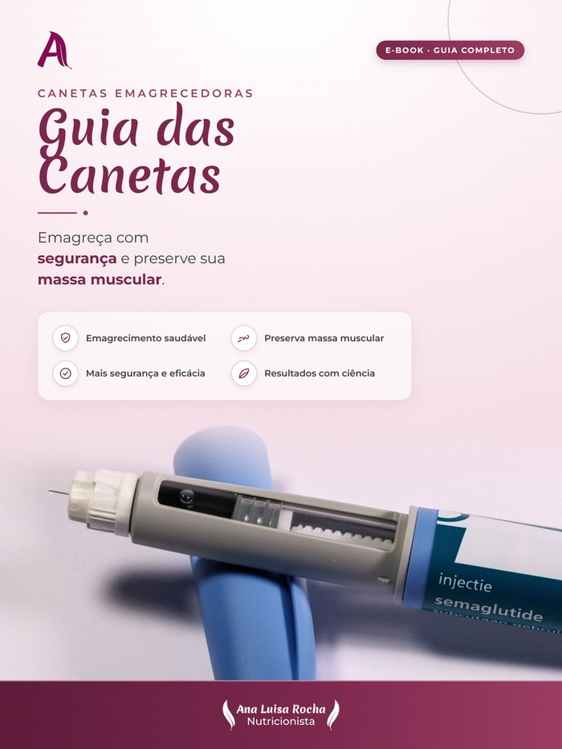
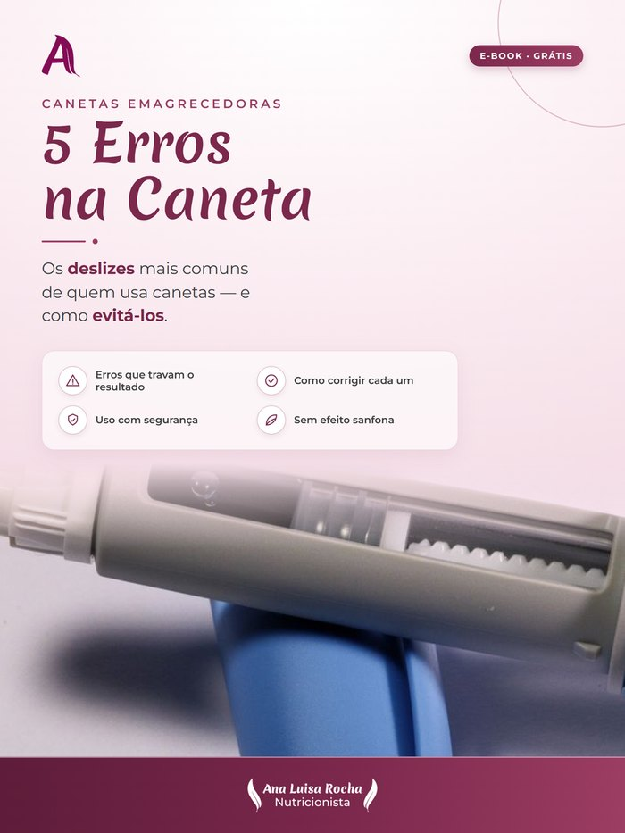
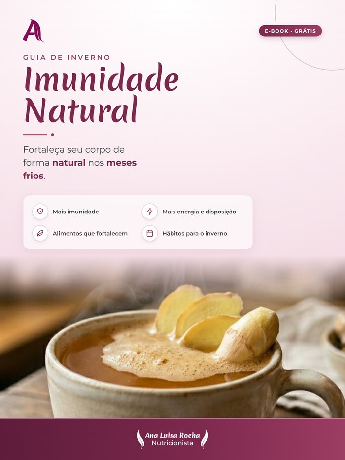
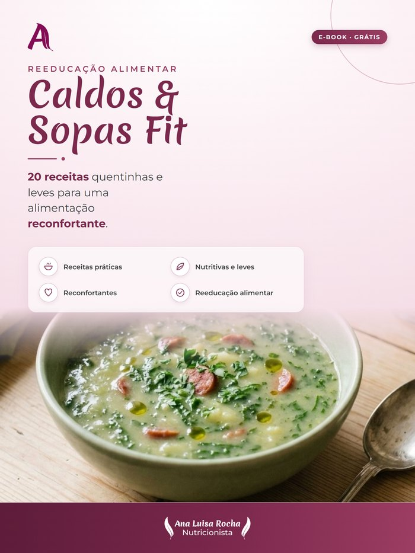

Saúde da Mulher
Um cuidado nutricional pensado para todas as fases e questões da mulher, com acolhimento, ciência e sem terrorismo alimentar.
Acompanhamento nutricional personalizado para mulheres que desejam mais saúde, equilíbrio e qualidade de vida.
Atendimento presencial e online · CRN 25100401
Cuido da mulher de forma integral — do intestino aos hormônios, do bem-estar à relação com a comida — com base científica e um plano feito só para você.
Um cuidado nutricional pensado para todas as fases e questões da mulher, com acolhimento, ciência e sem terrorismo alimentar.
Emagrecimento saudável e sustentável, no seu ritmo, sem dietas restritivas nem efeito sanfona.
Manejo nutricional da Síndrome dos Ovários Policísticos e da resistência à insulina.
Alimentação anti-inflamatória para aliviar sintomas e melhorar a qualidade de vida.
Suporte nutricional para quem convive com miomas, favorecendo o equilíbrio e o bem-estar.
Estratégias para amenizar os sintomas da TPM e viver o ciclo com mais leveza e energia.
Reequilíbrio da microbiota e do intestino, base para a imunidade, a energia e o humor.
Não sabe por onde começar? Agende uma avaliação.
Atendimento individualizado, com escuta de verdade e um plano construído para a sua rotina.
Para quem prefere o cuidado no consultório, com avaliação física e antropométrica completa.
A mesma qualidade de atendimento, por vídeo, de qualquer lugar do Brasil.
Plano contínuo com retornos, ajustes e suporte entre as consultas para resultados que ficam.
Entre para a lista de transmissão da Nutri e receba conteúdos exclusivos direto no seu WhatsApp.
Conteúdo gratuito e sem spam. Você pode sair quando quiser. Ao continuar, você concorda com a nossa Política de Privacidade.
Materiais desenvolvidos por nutricionista para continuar cuidando de você além do consultório.

Como emagrecer com saúde durante o tratamento, preservar a massa muscular e manter o resultado.

O material gratuito que mostra os deslizes mais comuns de quem usa canetas — e como evitá-los.

Fortaleça seu corpo de forma natural nos meses frios, com alimentos e hábitos que aumentam a imunidade.

20 receitas quentinhas e leves para uma alimentação reconfortante e saudável.
Assine e receba os novos materiais lançados todo mês, sempre em primeira mão.
Já adquiriu um material? Acessar minha biblioteca →
Nutricionista apaixonada por transformar vidas através da alimentação.
Atendimento humanizado, baseado em ciência e focado em resultados sustentáveis.
Relatos reais e autorizados de mulheres que cuidaram da saúde comigo.
Ela foi uma benção na minha vida e me fez perder o trauma e o ranço de dietas. Tive algumas quedas e dificuldades, mas ela sempre segurou minha mão e me ajudou — isso faz toda a diferença.
Só de ver que a nutri te olha nos olhos pra conversar, pensa no plano alimentar com carinho, demonstra interesse em como você está e tira todas as suas dúvidas... Fora que é uma pessoa super simpática!
Me sinto cada vez melhor, mais feliz e motivada! Primeiro mês da minha vida sem a temida dor de cabeça e o mal-estar. Antes eu tinha uma meta de números; hoje a minha meta é ter saúde!
Eu tinha até ranço de dieta... até conhecer a Ana Luísa. Ela foi tão solícita e amável comigo que fui seguindo sem pressão, e sigo com ela até hoje.
Relatos reais de pacientes, utilizados mediante autorização, conforme as diretrizes do Conselho Federal de Nutricionistas.
Me chame no canal que preferir — será um prazer te atender.